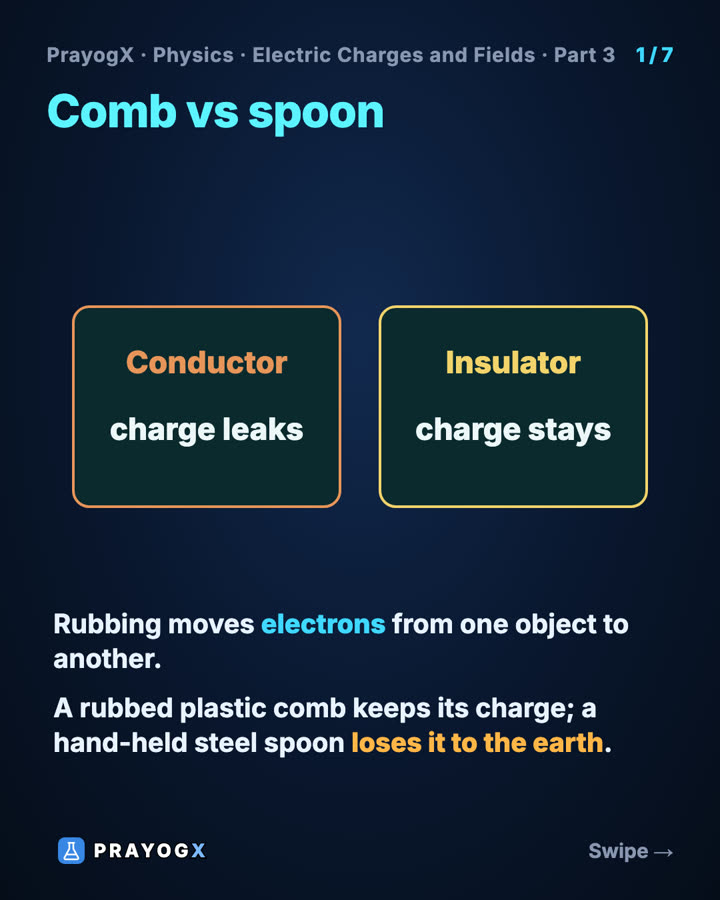
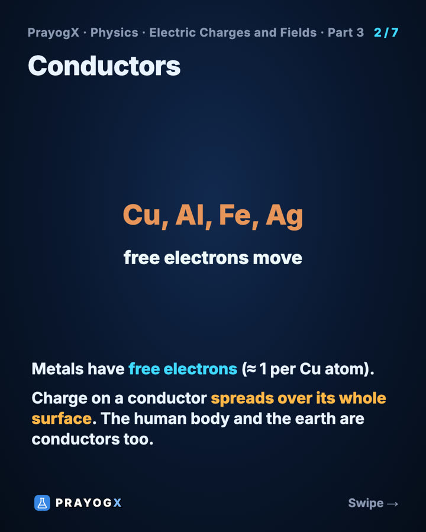
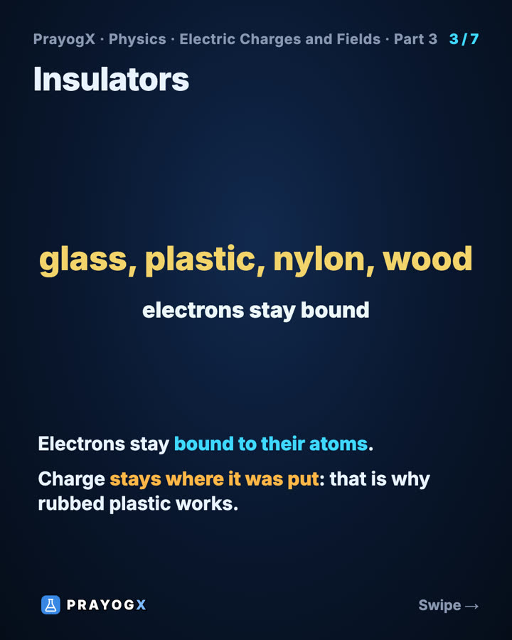
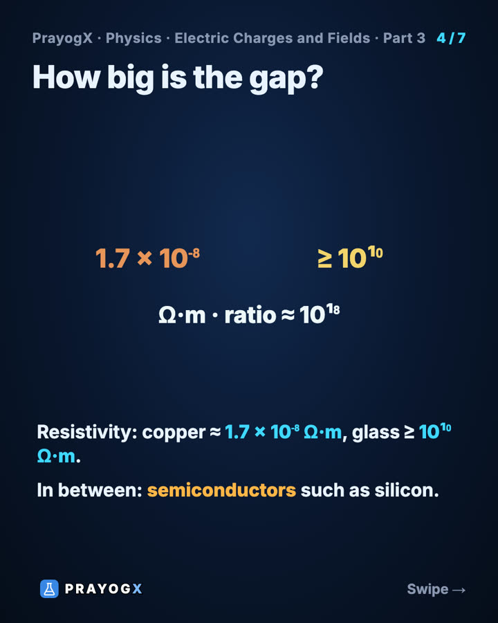
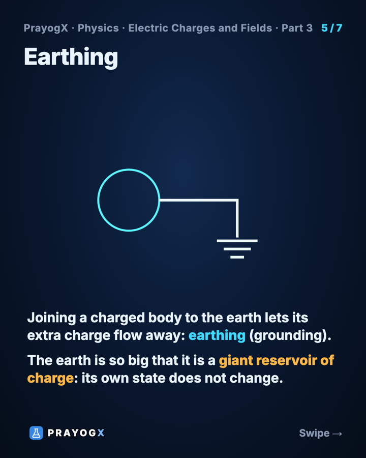
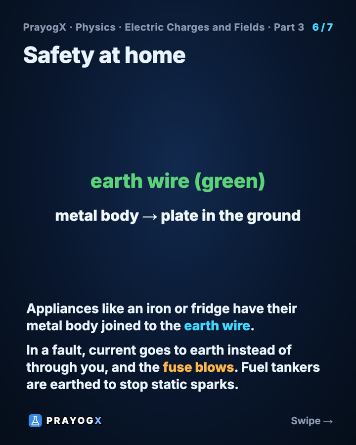
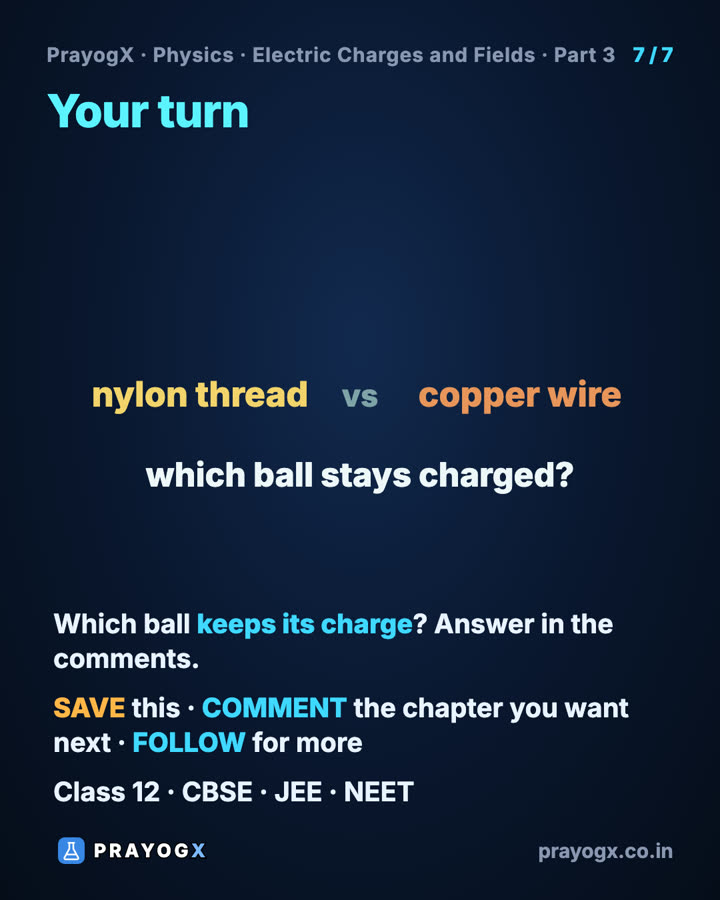

Why a Comb Stays Charged but a Spoon Doesn't: Conductors, Insulators and Earthing
Video not playing? YouTube
Rub a plastic comb on dry hair and it lifts paper bits; rub a steel spoon and nothing happens. Rubbing moves electrons, and what happens next depends on the material. Conductors (metals, the human body, the earth) have free electrons, so charge spreads over them and leaks away through the hand and body into the earth. Insulators (plastic, glass, nylon, wood) hold their electrons bound, so charge stays where it was put. Earthing connects a body to the earth, a giant charge reservoir; at home the earth wire and fuse use it for safety, and fuel tankers are earthed to prevent static sparks.
Download the short notesPDF, 164 KB · solved examples, practice set and answer key Download the memory cards
PDF, 1.1 MB · 7 cards: the whole topic at a glance, for quick revision Download the workbook
PDF, 191 KB · fill in the blanks, true/false, assertion-reason, MCQ, numericals, short answer, match the columns; detailed solutions at the end Up next in this chapter
 Where Does Electric Charge Go? Additivity and Conservation of ChargeRub a glass rod with silk and the two get charges that are always exactly equal and opposite. Rubbing moves electrons from the glass to the silk; it never makes charge. Charge is additive (the total is the algebraic sum, signs included) and conserved (the total charge of an isolated system never changes). The rule holds even when particles transform: a free neutron becomes a proton, an electron and an antineutrino, and a gamma photon near a nucleus becomes an electron and a positron, with the total charge unchanged every time.Physics · 9:16 + 16:9
Where Does Electric Charge Go? Additivity and Conservation of ChargeRub a glass rod with silk and the two get charges that are always exactly equal and opposite. Rubbing moves electrons from the glass to the silk; it never makes charge. Charge is additive (the total is the algebraic sum, signs included) and conserved (the total charge of an isolated system never changes). The rule holds even when particles transform: a free neutron becomes a proton, an electron and an antineutrino, and a gamma photon near a nucleus becomes an electron and a positron, with the total charge unchanged every time.Physics · 9:16 + 16:9
Key points
- Charge: rubbing moves electrons from one object to another; an object with extra or missing electrons is charged.
- Conductors (metals, human body, earth) have free electrons (≈ 1 per Cu atom): charge spreads over the whole surface and can flow away.
- Insulators (plastic, glass, nylon, wood): electrons are bound to atoms, so charge stays where it was put.
- Why the spoon fails: its charge leaks through the hand and body into the earth. Held by a plastic handle, a metal rod does stay charged.
- Scale: resistivity of copper ≈ 1.7 × 10⁻⁸ Ω·m, glass ≥ 10¹⁰ Ω·m (≈ 10¹⁸ times); semiconductors such as silicon lie between.
- Earthing: joining a body to the earth lets its extra charge flow away; the earth is a giant charge reservoir.
- Safety: an appliance's metal body is joined by the earth wire to a plate buried in the ground; in a fault the current goes to earth and the fuse blows. Fuel tankers are earthed to prevent static sparks.
Conductors vs insulators
| Conductors | Insulators | |
|---|---|---|
| Electrons | free to move (≈ 1 per Cu atom) | bound to their atoms |
| Charge given to it | spreads over the whole surface | stays where it was put |
| Held in the hand and rubbed | charge leaks to the earth | stays charged |
| Resistivity | copper ≈ 1.7 × 10⁻⁸ Ω·m | glass ≥ 10¹⁰ Ω·m |
| Examples | metals, human body, earth, salt water | plastic, glass, nylon, wood, rubber |
Memory cards
Swipe through the 7 cards to revise this topic in a minute.







PDF, 1.1 MB · 7 cards: the whole topic at a glance, for quick revision
Quick quiz
10 questions. Choose an answer for each, then submit to see your score and the explanations.
More from Electric Charges and Fields
 Electric Charge: Like Charges Repel, Unlike AttractThose sparks when you pull off a sweater come from electric charge. How rubbing moves electrons, what positive and negative mean, and why like charges repel.Physics · simulation
Electric Charge: Like Charges Repel, Unlike AttractThose sparks when you pull off a sweater come from electric charge. How rubbing moves electrons, what positive and negative mean, and why like charges repel.Physics · simulation Electric Charges and Fields: Chapter IntroductionA rubbed comb lifts paper bits without touching them. Rubbing moves electrons, a charged body attracts even neutral paper by induction, and every charge reaches out through its electric field.Physics
Electric Charges and Fields: Chapter IntroductionA rubbed comb lifts paper bits without touching them. Rubbing moves electrons, a charged body attracts even neutral paper by induction, and every charge reaches out through its electric field.Physics